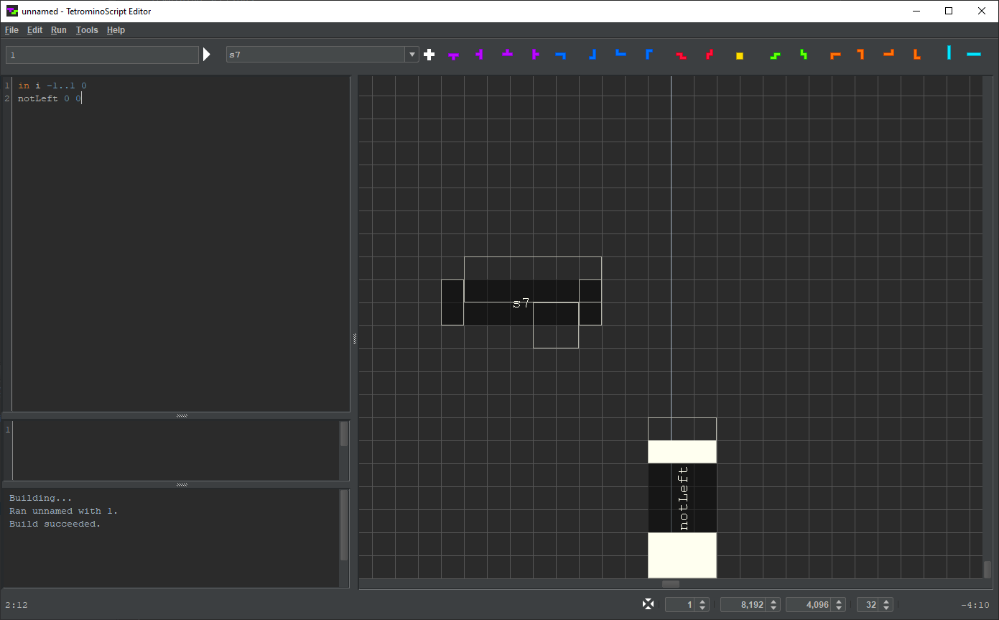

© 2023 meatfighter.com
This work is licensed under CC BY-SA 4.0


Contents > Applications > TetrominoScript Editor
On startup, TSE synthesizes components that represent vertical wires of various lengths. The image below depicts ir3, ir4, …, ir12 from left to right. The “i” in their names refer to fact that vertical wires primarily consist of I-tetrominoes. The “r” means the piece at the base extends to the right of the wire. And the number is the height. It goes up to 2001.
The following image shows il3, il4, …, il12. The “l” means the piece at the base extends to the left of the wire.
TSE renders a vertical wire as a dark rectangle with unassigned input and output nodes:
Below, the wire is attached to the inverter such that the inverter's output node serves as the wire's input node. Note that it propagates the signal.
TSE also synthesizes components that represent horizontal wires of various lengths. The following image depicts s3, s5, s7, …, s21 and z3, z5, z7, …, z21 separated by O-tetrominoes from top to bottom. The numbers refer to the component widths. As with the vertical wires, they go up to 2001. However, since a single piece has width three and each additional piece increases the width by two, TSE cannot synthesize horizontal wires of even length, at least not purely out of S- and Z-tetrominoes.
The image below shows that TSE renders s7 as a enigmatic set of rectangles.

It looks strange because both the input and the output nodes are disjoint. In the following image, the input node is painted blue. The white-outlined rectangles constitute the output node.
s7 can couple to a component in two different ways. It can connect on the right:
That hangs it off the side:
Or it can connect on the bottom:
That rests it on its base:
Either way, only the rightmost S-tetromino supports the entire wire.
z7 is the horizontal reflection of s7:
The user can fashion wires from individual tetrominoes. To demonstrate this, the following image shows a TS program describing a pair of inverters.
The user presses the iv button. Then, as the user moves the mouse cursor in the playfield, TSE renders a vertical I-tetromino:
The user presses the left mouse button, causing the I-tetromino to drop:
TSE appends iv to the TS program:
The user repeats with a second I-tetromino:
Like any solid structure, an individual tetromino resting on a node propagates the node’s value to its surface cells. In this case, the uppermost cells of the vertical I-tetrominoes, outlined in the image below, act as output nodes.
In the following image, the left I-tetromino's output node serves as the input node of an inverter.
Similarly, the right I-tetromino's output node serves as the input node of another inverter:
Here is the result at rendering depth 2:
© 2023 meatfighter.com |